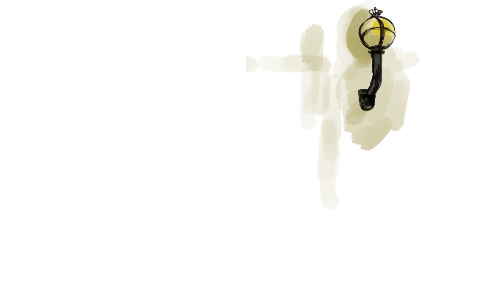
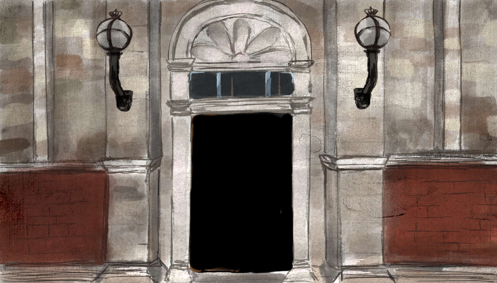
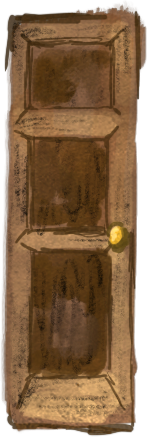
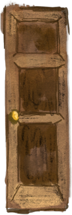

<div>

    
    
    
    


    
    <!--TODO - This scene needs as background the outdoors scene at night-->

    <!--TODO replace this with the clickable door-->
    <!-- <p ng-click="outside_door_click()">Door</p> -->

    


    
    
    
    <!--subtitles-->
    <p>{{narration.outside_door}}</p>

</div>
<script src="webgazer.js" type="text/javascript"></script>
<script>
document.getElementById("light_r").style.visibility = "hidden"
document.getElementById("light_l").style.visibility = "hidden"
var xprediction;
var yprediction;
//webgazer.begin()
webgazer.setGazeListener(function(data, elapsedTime) {
  if (data == null) {
    return;
  }
  xprediction = data.x; //these x coordinates are relative to the viewport
  //yprediction = data.y; //these y coordinates are relative to the viewport
  if (xprediction > 850) {
    //console.log("Right")
    document.getElementById("light_r").style.visibility = "visible"
    document.getElementById("light_l").style.visibility = "hidden"
  } else if (xprediction < 600) {
    //console.log("Left")
    document.getElementById("light_l").style.visibility = "visible"
    document.getElementById("light_r").style.visibility = "hidden"
  } else {
    document.getElementById("light_r").style.visibility = "hidden"
    document.getElementById("light_l").style.visibility = "hidden"
  }
}).begin();
</script>

